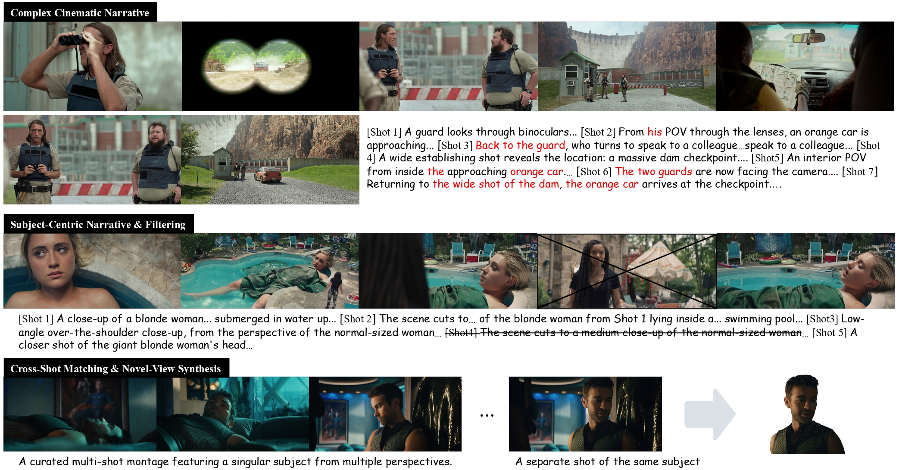
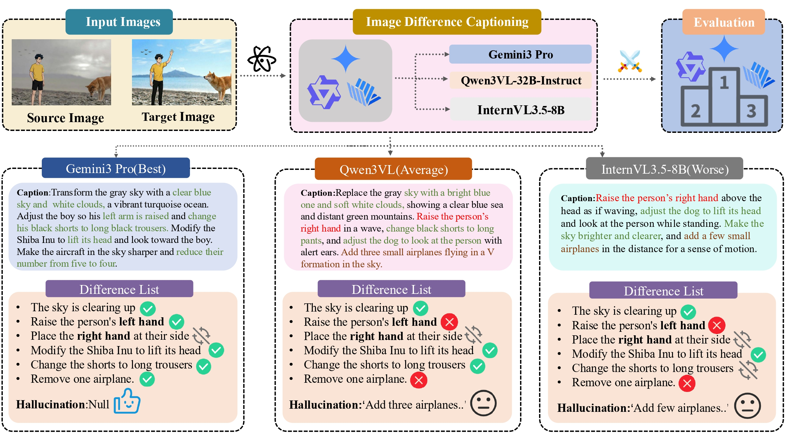
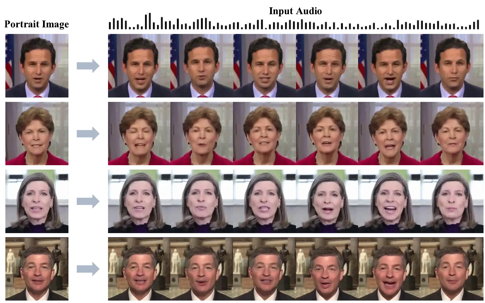
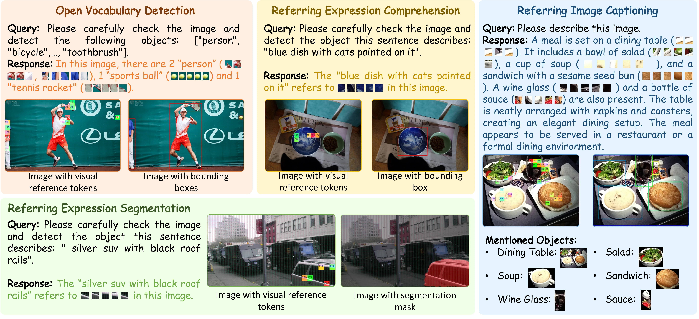
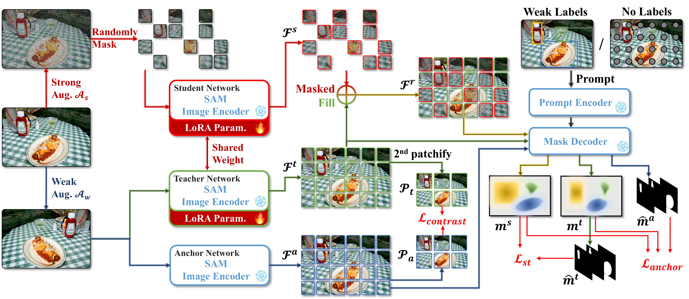
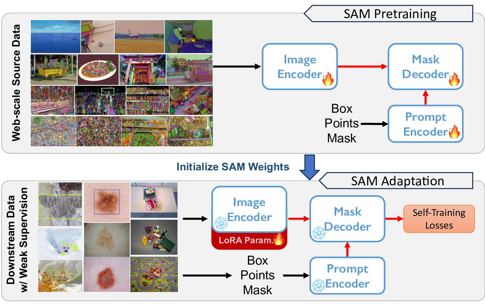

Generative Models · Multimodal LLMs · Computer Vision
Haojie Zhang | 张浩杰
I am currently a Senior Algorithm Researcher at Alibaba ATH, working in Token Foundry. I received my M.Sc. in Information and Communication Engineering from South China University of Technology (SCUT) in 2026, advised by Prof. Kui Jia and Dr. Xun Xu, and my B.Eng. in Information Engineering from SCUT in 2023. I previously visited the Department of Automation at Tsinghua University, where I worked with Prof. Jianhua Tao.
My research explores generative models, multimodal large language models, and foundation vision systems. My long-term goal is to bridge perception, understanding, and imagination in intelligent systems.
Hangzhou, China
News
-
Aug. 2026I joined Alibaba ATH as part of Token Foundry.
-
Jul. 2026The technical report for LingBot-World 2.0 was released.
-
May 2026MuSS was accepted to ACM MM 2026 as an oral presentation.
-
Apr. 2026LetsTalk was accepted for publication in IEEE Transactions on Multimedia.
-
Jan. 2026PaDT was accepted to ICLR 2026.
Selected Publications
* Equal contribution. Selected work is ordered by recent publication milestones.






Education & Experience
Education
Tsinghua University
Visiting Student, Department of Automation
Advisor: Prof. Jianhua Tao
South China University of Technology
M.Sc. in Information and Communication Engineering
Advised by Prof. Kui Jia and Dr. Xun Xu
South China University of Technology
B.Eng. in Information Engineering (Innovation Class)
Graduated with distinction · GPA 3.64/4.0
Experience
Alibaba ATH
Token Foundry · Hangzhou
Ant Research Institute
Lingbot-World Team · Hangzhou
Tencent TEG
Hunyuan Team · Shenzhen
Tencent WXG
WeChat Vision · Shenzhen
Tencent IEG
LIGHTSPEED · Shenzhen
Open-source Projects
Research code and project pages accompanying selected work.